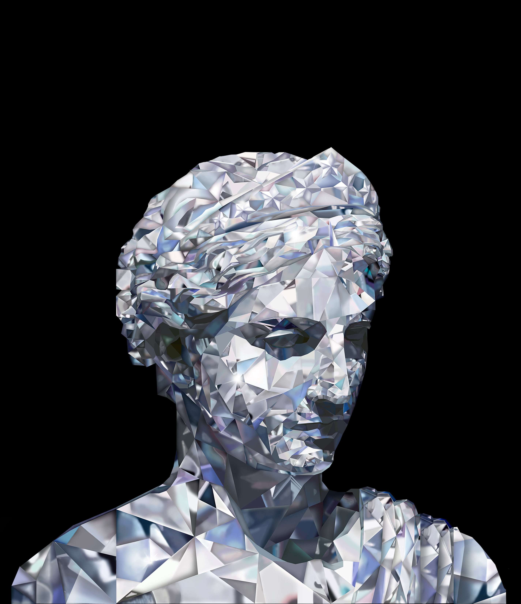
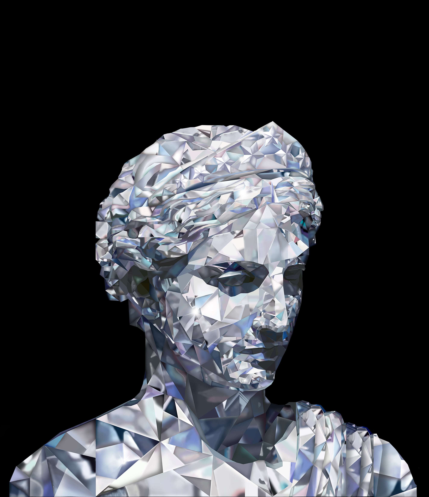

CRYSTAL VENUS
In the summer of 2018, I interned for Seoul-based portrait artist named Jamie Kim. I was challenged with digitally transforming the goddess Venus into a crystal-like structure. This piece is a part of Kim's Crystal Collaboration series, a collection of portraits that are coated with glitter powder.
YEAR
2018
SOFTWARES USED
Illustrator
Photoshop
YEAR
2018
SOFTWARES USED
Illustrator
Photoshop
THE PROCESS
Inspired by the low-poly art style, I decided to create the base of Venus in Adobe Illustrator using triangles. I imported the base into Photoshop, where I manually colored in every triangle to emulate the colors and shades of diamonds and crystals. This part of the process was the most tedious. After each triangle was colored in, Jamie Kim silk screened the piece and coated it with glitter powder.
 
